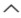
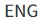
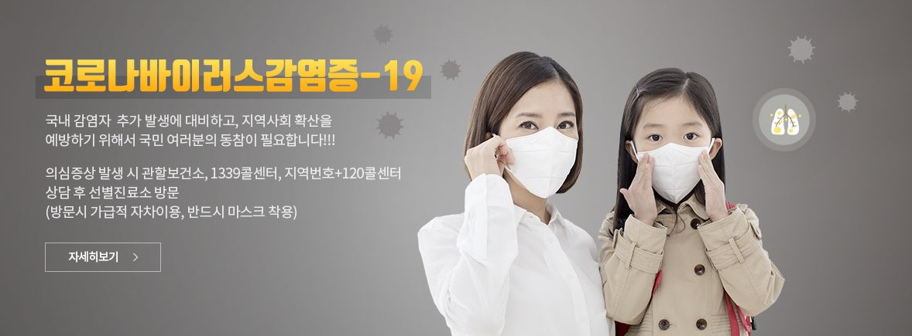
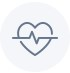
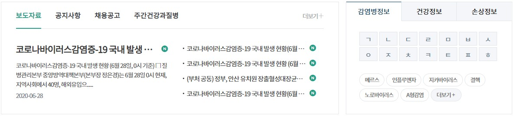
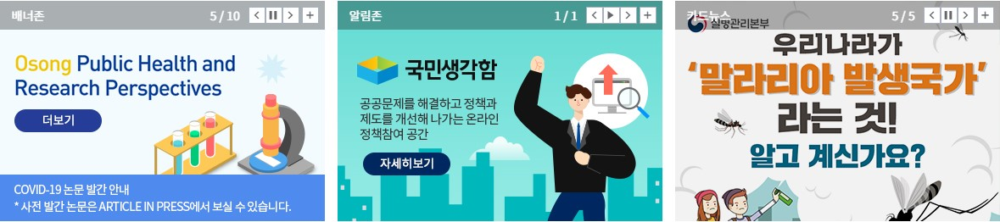
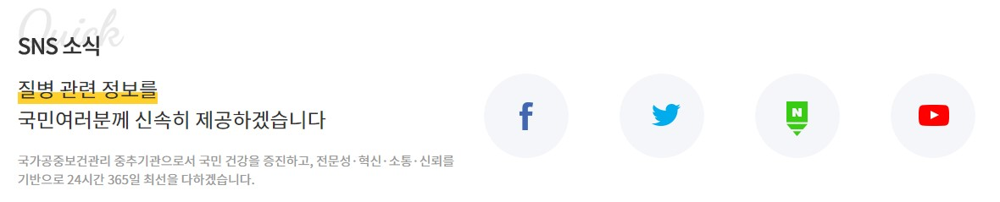

인기키워드
1
2
3
4
5
6
7
8
9
10
코로나19
메르스
자가격리
코로나19예방수칙
손씻기
대응지침
마스크
포스터
방역
사회적거리두기

감염병
감염병정보
해외감염정보
해외질병
해외감염병NOW
예방접종정보
국가별요구사항
건강정보
정책정보
연구개발
알림.자료
간행물.통계
민원.정보공개
기관소개
소개
비전과미션
핵심사업
정부상징
웹접근성품질인증
인사말
약력
사업별홈페이지

온열질환 건강수칙
비브리오패혈증 예방수칙
미세먼지 건강수치
코로나19 영상자료
국가별 질병정보
홍보자료

이달의 건강정보
조직도직원검색
법령.지침.서식
공고/공시
  
진짜 힘은 손 씻을 때 생긴다
마블 콜라보 질병예방 캠페인
중동지역을 방문하셨나요?
메르스 의심증상 발생 시 1339
기침예절 지켜요!
기침예절은 감염병 예방의 기본수칙
1339질병관리본부 콜센터
질병정보 궁금할 때 감염병이 의심될 때